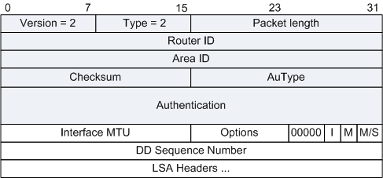

报文格式
两台路由器在邻接关系初始化时，用DD报文（Database Description
Packet）来描述自己的LSDB，进行数据库的同步。报文内容包括LSDB中每一条LSA的Header（LSA的Header可以唯一标识一条LSA）。LSA
Header只占一条LSA的整个数据量的一小部分，这样可以减少路由器之间的协议报文流量，对端路由器根据LSA Header就可以判断出是否已有这条LSA。在两台路由器交换DD报文的过程中，一台为Master，另一台为Slave。由Master规定起始序列号，每发送一个DD报文序列号加1，Slave方使用Master的序列号作为确认。
图1 DD报文格式

| 字段 |
长度 |
含义 |
| Interface MTU |
16比特 |
在不分片的情况下，此接口最大可发出的IP报文长度。 |
| Options |
8比特 |
可选项：- E：允许Flood AS-External-LSAs；
- MC：转发IP组播报文；
- N/P：处理Type-7 LSAs；
- DC：处理按需链路。
|
| I |
1比特 |
当发送连续多个DD报文时，如果这是第一个DD报文，则置为1，否则置为0。 |
| M (More) |
1比特 |
当发送连续多个DD报文时，如果这是最后一个DD报文，则置为0。否则置为1，表示后面还有其他的DD报文。 |
| M/S (Master/Slave) |
1比特 |
当两台OSPF路由器交换DD报文时，首先需要确定双方的主从关系，Router ID大的一方会成为Master。当值为1时表示发送方为Master。 |
| DD sequence number |
32比特 |
DD报文序列号。主从双方利用序列号来保证DD报文传输的可靠性和完整性。 |
| LSA Headers |
可变 |
该DD报文中所包含的LSA的头部信息。 |